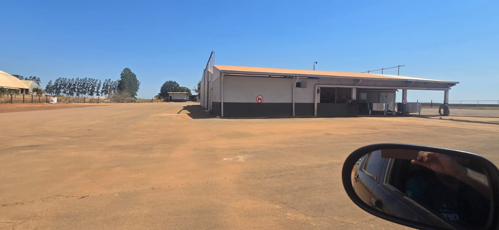
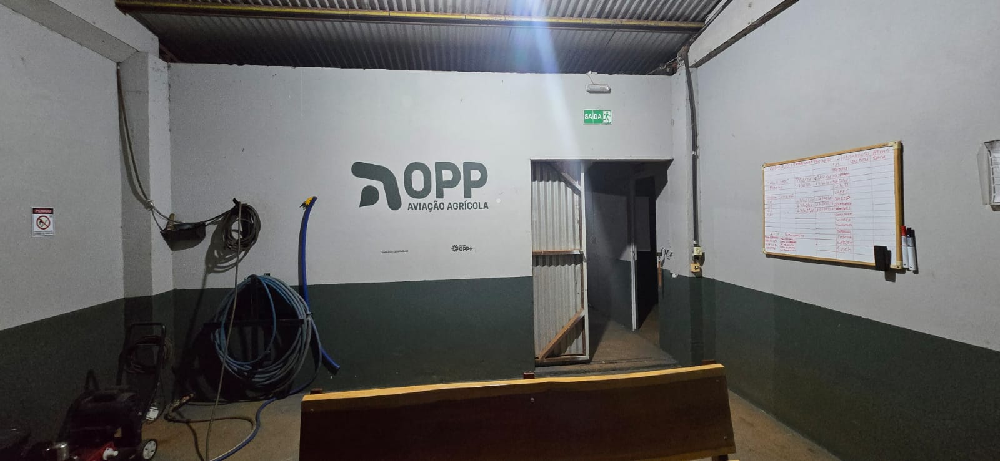
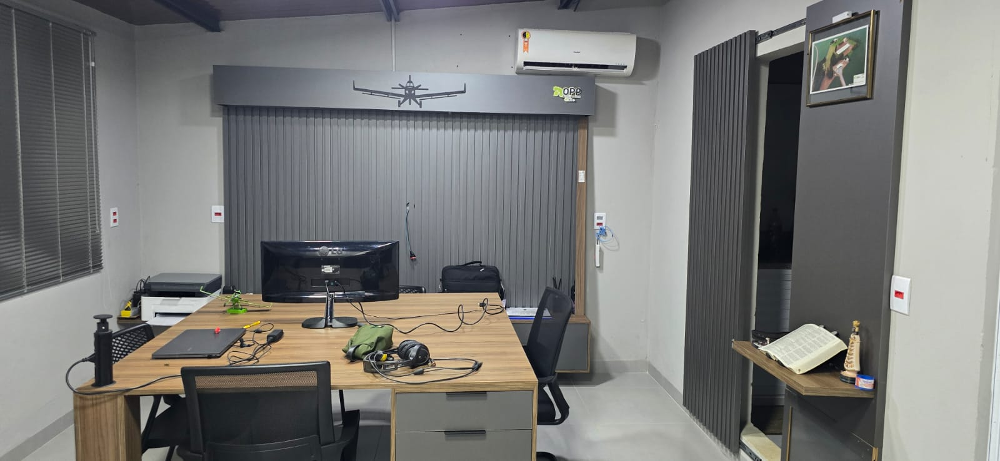
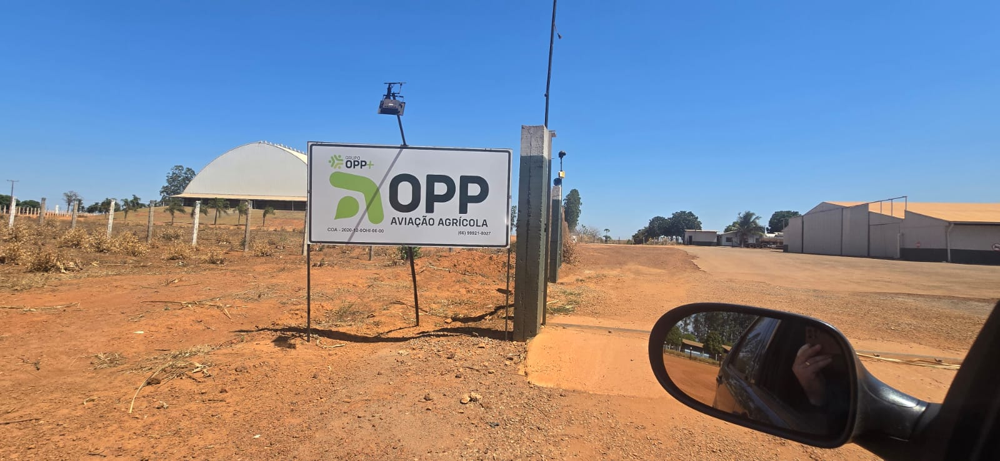
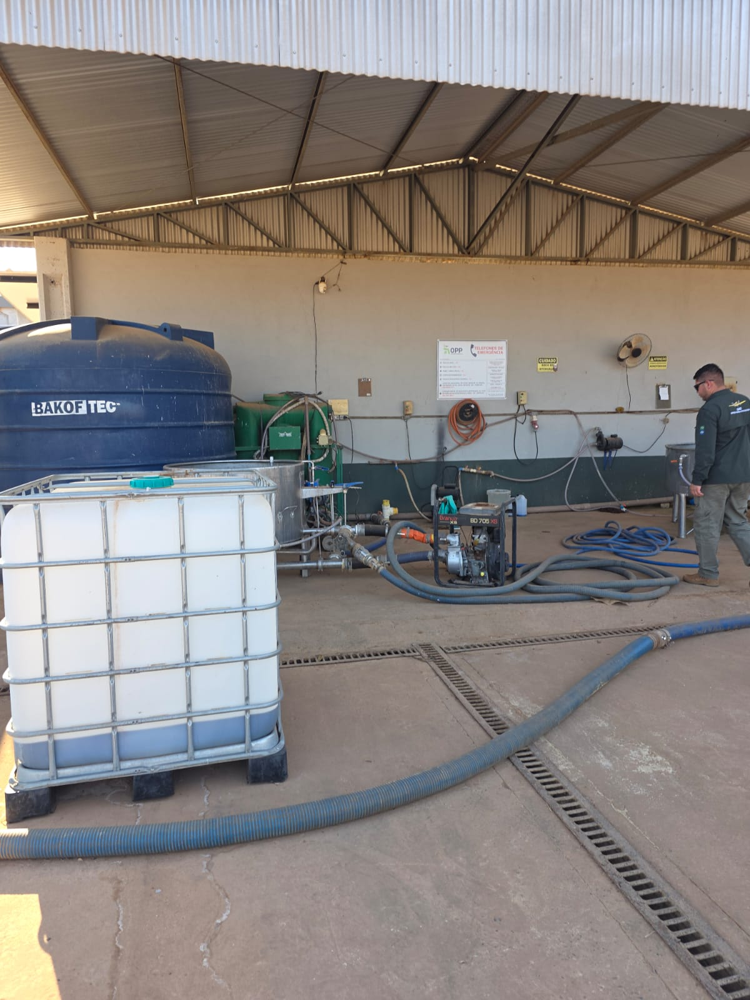
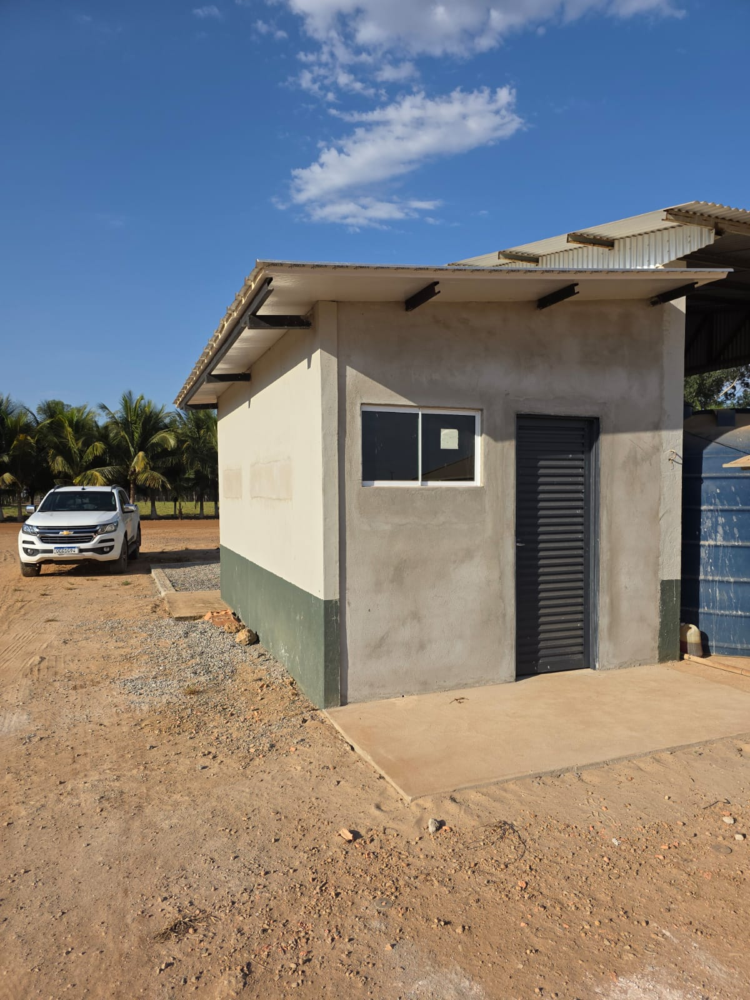
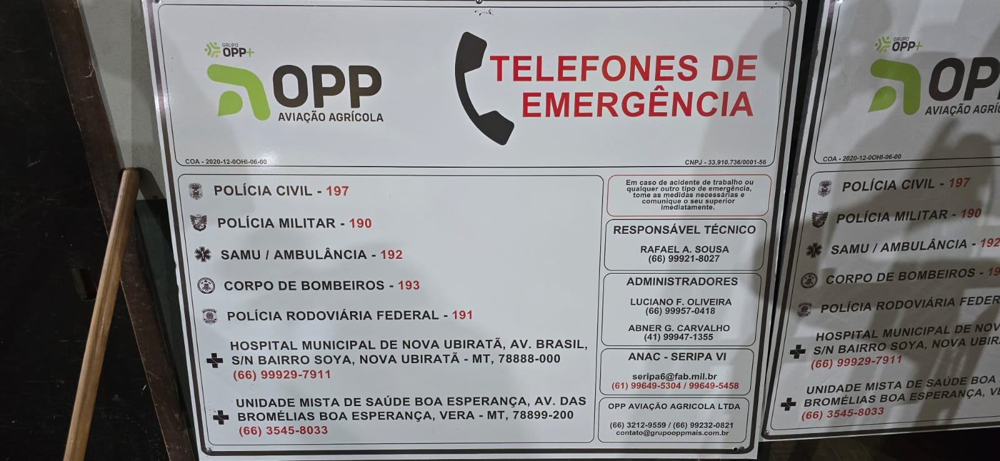

Fachadas, alvenaria, placas de unidade e identificação interna. Aqui o público já está dentro — não há flanco a expor, e a marca pode aparecer com clareza. O padrão não foi inventado: foi lido do que já está construído na Base 1 e organizado em regra.
01 · Ponto de partida
O padrão já existe
Parede branca com barra baixa verde escuro, em altura constante, por fora e por dentro. Logo pintado direto na parede, em uma cor só, com o COA e o Grupo Opp+ menores abaixo. Isso é sistema, não improviso — e o trabalho aqui é documentá-lo para que a próxima base nasça igual, não redesenhá-lo.

Fachada da Base 1 — branco com barra verde contínua, cerca de um terço da altura da parede.

Interior de operação — mesma barra, mesma altura. O logo pintado com COA e Grupo Opp+ abaixo.
!As fotos trazem logotipos anteriores à versão atual. Servem como referência de aplicação — proporção, altura, posição — nunca como referência de arte. Toda peça nova sai com os arquivos vigentes.
02 · Cor
Branco manda, verde assina
Uma cor principal e uma secundária, sem terceira. O branco domina a superfície e resolve calor e manutenção; o verde marca a base da parede e assina o conjunto.
Principal · branco
Toda a superfície de parede, interna e externa. Acabamento fosco ou acetinado — brilhante denuncia imperfeição e reflete sol.
Secundária · verde escuro
O verde do ícone da Aviação Agrícola, referência #1C3323. Barra de rodapé e logo pintado.
A regra que separa externo de interno
Externo · sempre verde
Hangar, operação ou administrativo: por fora, a leitura é uma só. Quem chega à unidade vê o mesmo conjunto, não importa qual prédio esteja olhando.
Interno administrativo · cinza
Escritório usa cinza no lugar do verde — ambiente de trabalho sentado, luz artificial, outra escala. Interno de hangar e operação continua verde.
Em uma frase: a cor secundária muda por ambiente interno, nunca por fachada.
!Cor de parede não se especifica por foto nem por tela. A referência digital serve para escolher o caminho; a aprovação é em amostra física pintada, vista na luz do local — de dia e sob a iluminação noturna do galpão.
03 · Alvenaria
A barra de rodapé
Nasceu de necessidade prática — a base da parede é onde bate bota, mangueira, carrinho e pneu — e virou traço de marca. Mantê-la constante é o que faz o conjunto parecer um sistema em vez de uma pintura qualquer.
Como executar
{{ a.item }}
{{ a.regra }}

Administrativo da Base 1 — o cinza no lugar do verde, com a silhueta da aeronave sobre o bandô. É a variação legítima de interior de escritório.
Silhueta da aeronave
Recurso decorativo de interior administrativo, não elemento de marca. Pode existir onde couber, sempre em uma cor só e nunca disputando com o logotipo na mesma parede.
04 · Logo na parede
Uma marca por parede
A parede branca acima da barra é o campo do logotipo. Ele aparece sozinho, em verde escuro, com o COA e o Grupo Opp+ discretos abaixo — hierarquia que já está executada na Base 1 e funciona.
{{ l.titulo }}
{{ l.desc }}
05 · Placas de unidade
A placa de entrada é o padrão
A placa já instalada na Base 1 resolve a questão: fundo branco, Grupo Opp+ pequeno no topo, Aviação Agrícola dominante, COA à esquerda e telefone à direita no rodapé. Toda placa de unidade, hangar ou pista segue essa estrutura.

Placa de identificação da pista — a estrutura a herdar.
Ordem fixa dos elementos
{{ p.n }}{{ p.txt }}
Em via pública ou calçada, a placa identifica a unidade e nada mais: nome, COA e telefone. Não leva serviço, não leva chamada, não leva imagem de operação. Quem precisa achar o lugar, acha; quem passa, lê uma empresa identificada — que é exatamente o que se quer.
Três tamanhos, três funções
{{ t.titulo }}
{{ t.leitura }}
{{ t.desc }}

Apoio de pista remota — a placa de emergência está na parede do fundo, longe de onde se trabalha. Informação de socorro precisa estar ao alcance de quem opera, não onde sobrou parede.
06 · Locação e peças internas
Onde a placa fica é metade da placa
Placa bem desenhada no lugar errado não informa ninguém — é o caso da placa de emergência na parede do fundo. Aqui a locação não é escolha de quem instala: é regra, e a maior parte dela vem da norma de acessibilidade, não do gosto da marca.
Onde instalar cada peça
{{ l.peca }}
{{ l.altura }}
{{ l.onde }}
As peças em si são pequenas, feitas uma vez e repetidas para sempre. Todas partem do mesmo par — branco de fundo, verde escuro de tinta, Montserrat no texto — e as de porta e vidro seguem a NBR 9050, que é obrigação legal em ambiente de uso coletivo, não recomendação.
{{ i.titulo }}
{{ i.medida }}
{{ i.desc }}
Onde a norma dá faixa, adotamos o meio dela e fixamos um número só para toda a empresa — placa igual em toda porta vale mais que placa ótima em uma.
Placa de condomínio de escritórios
O formato é do condomínio, não nosso — tamanho, material e posição vêm de quem administra o prédio. O que levamos é o conteúdo: logotipo do Grupo Opp+ e o nome da unidade, nada mais.
Em placa coletiva a marca aparece colorida. É a única linha de uma lista onde só o logo distingue a empresa das outras; monocromático ali some.

Obra nova já nascendo no padrão: barra verde na mesma altura da base existente, antes mesmo do acabamento. É assim que o sistema se mantém — decidido na obra, não corrigido depois.
07 · Assinatura em placa técnica
A marca assina, não decora
Uma placa de PARE funciona porque é igual em todo lugar do país. Quem chega ao cruzamento do pátio não lê a placa: reconhece a forma e a cor antes de ler. Logotipo dentro desse campo cobra um instante de leitura que o motorista ia gastar frenando — e transforma ordem em anúncio.
Mas a placa é nossa, está na nossa área, e existe uma forma consagrada de dizer isso: a tarja de responsável no pé da peça — a mesma faixa onde a fabricante costuma assinar. Fora do símbolo, monocromática, sem telefone e sem serviço. Assim a marca aparece para quem já parou, nunca para quem ainda está parando.
Não fazer
PARE
Marca dentro do octógono. Disputa espaço com a palavra, quebra o padrão que dá autoridade à peça e faz a ordem parecer propaganda.
Fazer
PARE
OPP AVIAÇÃO AGRÍCOLA · BASE I
Tarja de responsável abaixo da face, monocromática e miúda. Diz de quem é a placa sem tocar no símbolo que precisa ser lido a 15 m.
Três níveis, uma decisão só
{{ n.n }}
{{ n.tipo }}
{{ n.exemplo }}
{{ n.regra }}
Regra de bolso: se a placa existisse igual em qualquer outra empresa, a marca vai no pé. Se a placa só faz sentido aqui, a marca é parte dela.
08 · Placa interna de sala
Uma peça, quatro tamanhos
Nenhum exemplar foi impresso ainda — então o padrão nasce inteiro, sem herança para corrigir. Uma anatomia só, esticada em quatro tamanhos: porta, setor suspenso, mesa e faixa de vidro. Quem confecciona recebe a mesma arte com a medida trocada.
SUPORTE OPERACIONAL
{{ a.parte }}
{{ a.spec }}
A família e as medidas de corte
{{ f.peca }}
{{ f.medida }}
{{ f.material }}
{{ f.uso }}
O nome é da função
Mesma regra da linha de WhatsApp: a placa nomeia o que se faz na sala, nunca quem senta nela. Pessoa muda de sala, sala não muda de função — e placa com nome próprio vira lixo na primeira mudança.
Placa de mesa é a única exceção: leva nome e função, e por isso é a única feita em suporte trocável, com o papel deslizando para fora.
Nomes já existentes na Base I
{{ n }}
Vêm do projeto de sinalização da base. "Merenda & Alegria" fica como está — é nome da casa, e nome de casa não se corporativiza.
09 · Limite
O que a marca não governa
Peça de segurança obedece a norma, não a paleta. Vermelho, amarelo, faixa zebrada e pictograma de risco existem para serem vistos por quem está com pressa ou com medo — e não se submetem ao verde da casa.

Telefones de emergência — peça normativa.
Nessas peças a marca entra só no cabeçalho e no rodapé — logotipo, COA e razão social. O miolo é da norma e de quem responde por segurança do trabalho.
Saída, extintor, proibição de fumar e sinalização de risco seguem a legislação e a orientação técnica, sem passar pela marca.
Ao construir ou reformar uma base
{{ c.fase }}
{{ c.txt }}
Opp Aviação Agrícola Ltda · CNPJ 33.910.736/0001-56 · Sorriso/MT

 OPP AVIAÇÃO AGRÍCOLA · BASE I
OPP AVIAÇÃO AGRÍCOLA · BASE I